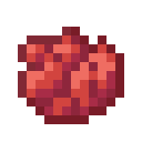

Pytaria
Beautiful yet deadly opponent with addiction to flowers.
She suffered all her youth, which, in the end, only made her stronger.
Archetype: üí¢ Damage
Experts in dealing as much damage as possible.
Attributes
She suffered all her youth, which, in the end, only made her stronger.
Archetype: üí¢ Damage
Experts in dealing as much damage as possible.
Attributes
| Health | ❤ 125 | Crit Chance | ☣ 20% | Attack | üó° 90 | Crit Damage | ☠ 40% |
|---|---|---|---|
| Defence | ⛊ 100 | Attack Speed | ⚔ 100% |
| Speed | üåä 100% |
Annihilallium
Weapon
A beautiful flower, nothing more.
Weapon
A beautiful flower, nothing more.
Flower Escape
Damage Talent
Throw a deadly flower at your current location and dash backwards.
The flower will continuously pulse and deal damage to nearby players.
After the duration is over,it will explode dealing double the damage.
Damage Talent
Throw a deadly flower at your current location and dash backwards.
The flower will continuously pulse and deal damage to nearby players.
After the duration is over,it will explode dealing double the damage.

Flower Breeze
Enhance Talent
Feel the breeze of the flowers taht famages you but grants üó° Attack and ⛊ Defence boost for 4s.
Enhance Talent
Feel the breeze of the flowers taht famages you but grants üó° Attack and ⛊ Defence boost for 4s.
Excellency
Enhance Passive
The less health Pytaria has, the more her üó° Attack and ☣ Crit Chance increases.
But her ⛊ Defence significantly decreases.
Enhance Passive
The less health Pytaria has, the more her üó° Attack and ☣ Crit Chance increases.
But her ⛊ Defence significantly decreases.

Feel the Breeze
Damage Ultimate
Summon a blooming Bee in front of Pytaria.
The Bee will lock on the closest enemy and charge for 2.5s.
Once charged, the Bee creates an explosion at the locked location, dealing damage in small AoE.
Also regenerates 40% ❤ of Pytaria's missing health.
Damage Ultimate
Summon a blooming Bee in front of Pytaria.
The Bee will lock on the closest enemy and charge for 2.5s.
Once charged, the Bee creates an explosion at the locked location, dealing damage in small AoE.
Also regenerates 40% ❤ of Pytaria's missing health.